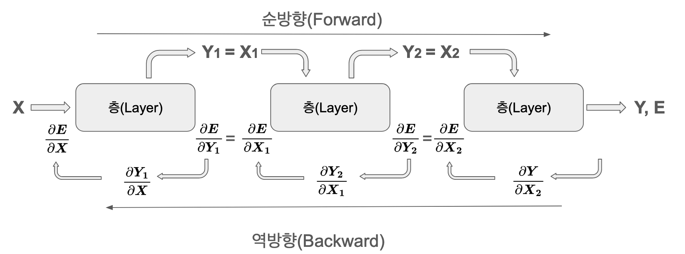

“기술의 진정한 혁신은 과거의 실패에서 태어난다” - 제프리 힌튼, 2018 튜링상 수상 연설
1.1 이 책의 목적
딥러닝은 머신러닝의 한 분야로, 최근 놀라운 성과를 보이며 급격히 발전하고 있습니다. GPT-4, Gemini와 같은 거대 언어 모델(LLM)이 등장했고, 일반 인공지능(AGI)에 대한 기대와 우려가 공존하고 있습니다. 연구 논문과 기술이 빠르게 발전하면서 전문가들도 따라가기 어려운 상황입니다.
이러한 상황은 1980년대 후반 PC와 프로그래밍 언어가 대중화되던 시기와 유사합니다. 당시 수많은 기술이 등장했지만, 결국 소수의 핵심 기술만이 현대 컴퓨팅의 기반이 되었습니다. 마찬가지로 현재의 신경망, CNN, RNN, 트랜스포머, 디퓨전, 멀티모달과 같은 다양한 딥러닝 아키텍처 중에서도, 핵심적인 DNA를 공유하는 소수만이 AI의 근간으로 남아 지속적으로 발전할 것입니다.
이 책은 이러한 관점에서 시작되었습니다. 단순한 API 사용법이나 기초 이론, 예제보다는 기술 발전의 DNA를 해부합니다. 1943년 McCulloch-Pitts 뉴런 모델에서 2025년 최신 멀티모달 아키텍처까지, 마치 생명체의 진화 과정처럼 각 기술이 등장하게 된 배경, 해결하고자 했던 본질적 문제, 그리고 이전 기술과의 연결 고리에 초점을 맞춥니다. 즉, 딥러닝 기술 계통도를 그려 나가는 것입니다. 1.2절에서는 그 내용을 간략하게 요약합니다.
이를 위해 이 책은 다음과 같은 특징을 가집니다.
DNA 관점의 설명: 단순 기술 나열이 아닌, 각 기술이 왜 등장했고, 어떤 문제를 해결했으며, 이전 기술과 어떤 관계를 맺는지, 즉, 기술의 계통(phylogeny)을 중심으로 설명합니다.
간결하면서도 깊이 있는 설명: 핵심 개념과 원리를 명확히 이해하도록 돕되, 불필요한 세부 사항은 과감히 생략합니다.
최신 기술 동향 반영: 2025년 현재까지의 최신 기술(e.g., Retentive Networks, Mixture of Experts, Multimodal Models)을 포함하여, 딥러닝 발전의 최전선을 다룹니다.
실무와 연구를 잇는 가교: 실용적인 코드 예제와 수학적 직관을 균형 있게 제시하여, 이론과 실제를 연결합니다.
고급 예제: 단순히 동작하는 코드를 넘어, 실제 연구나 개발에 바로 적용할 수 있을 만큼 충분히 발전된 형태의 예제를 제공합니다.
이를 통해 실무자와 연구자들이 전문성을 높이는 데 도움이 되고자 합니다. 또한 AI 기술이 가진 윤리적, 사회적 영향과 기술 민주화에 대한 고민도 함께 다루고자 합니다.
1.2 딥러닝의 역사
도전과제: 어떻게 하면 기계가 인간처럼 생각하고 학습하게 만들 수 있을까?
연구자의 고뇌: 인간 뇌의 복잡한 작동 방식을 모방하는 것은 극도로 어려운 과제였습니다. 초기 연구자들은 단순한 규칙 기반 시스템이나 제한된 지식 데이터베이스에 의존했지만, 이는 실제 세상의 다양성과 복잡성을 처리하는 데 한계가 있었습니다. 진정으로 지능적인 시스템을 만들기 위해서는 데이터로부터 스스로 학습하고, 복잡한 패턴을 인식하며, 추상적인 개념을 이해하는 능력이 필요했습니다. 이를 어떻게 구현할 수 있을지가 핵심적인 난제였습니다.
딥러닝의 역사는 1943년 Warren McCulloch와 Walter Pitts가 McCulloch-Pitts 뉴런이라는 수학적 모델로 뉴런 작동 방식을 설명하면서 시작되었습니다. 이는 신경망의 기본 구성 요소를 정의한 것입니다. 1949년, Donald Hebb은 Hebbian Learning 규칙을 제시, 시냅스 가중치 조절, 즉 학습의 기본 원리를 설명했습니다. 1958년 Frank Rosenblatt의 퍼셉트론(Perceptron)은 최초의 실용적 신경망이었으나, XOR 문제 같은 비선형 분류 한계에 직면했습니다.
1980년대는 중요한 돌파구가 마련된 시기입니다. 1980년, Kunihiko Fukushima는 Neocognitron (Convolution Principle의 기반) 을 제안, 이는 훗날 CNN의 핵심 아이디어가 됩니다. 가장 중요한 발전은 1986년 Geoffrey Hinton 연구팀의 오차역전파(backpropagation) 알고리즘 개발입니다. 다층 신경망의 효과적 학습을 가능하게 한 이 알고리즘은 신경망 학습의 핵심으로 자리 잡았습니다. 2006년 Hinton이 “딥러닝” 용어를 제안하면서 새로운 전기를 맞았습니다.
이후, 대규모 데이터와 컴퓨팅 파워의 발전으로 딥러닝은 급성장합니다. 2012년, AlexNet은 ImageNet 대회에서 압도적 성능으로 우승, 딥러닝의 실용성을 입증했습니다. 이후, Recurrent Networks 계열의 LSTM (1997), Attention Mechanism (2014)을 사용한 혁신적인 아키텍처들이 등장합니다. 특히, 2017년 구글의 트랜스포머(Transformer)는 자연어 처리 패러다임을 완전히 바꾸었습니다. 이는 Self-Attention을 통해 입력 시퀀스의 각 부분을 다른 부분과 직접 연결, 장거리 의존성 문제를 해결했습니다.
트랜스포머를 기반으로 BERT, GPT 시리즈가 등장, 언어 모델 성능이 비약적으로 발전합니다. 2013년 Word2Vec은 단어 임베딩의 새로운 지평을 열었습니다. Generative Models 분야에서는 2014년 GAN의 등장이후, 2020년 Diffusion Models로 고품질 이미지 생성이 가능해졌습니다. 2021년에는 Vision Transformer (ViT) 가 나오면서, 트랜스포머가 이미지 처리에도 성공적으로 적용되기 시작, Multimodal Learning의 발전을 가속화 시켰습니다.
최근 GPT-4, Gemini 같은 거대 언어 모델은 AGI 실현 가능성에 대한 기대를 높입니다. 이들은 2023년의 Retentive Networks와 같은 발전된 아키텍처, 2023년 이후 FlashAttention과 같은 효율성 기술, 그리고 2024년 Mixture of Experts (MoE) 등의 기법을 활용하여 더욱 정교해지고 있습니다. 또한, 텍스트, 이미지, 오디오 등 다양한 형태의 데이터를 통합 처리하는 Multimodal 모델(2024년 Gemini Ultra 2.0, 2025년의 Gemini 2.0까지)로 진화하면서 단순한 질의응답을 넘어 추론, 창작, 문제 해결 등 고차원적인 인지 능력을 보여주고 있습니다.
딥러닝 발전은 다음 핵심 요소에 기반합니다.
대규모 데이터 가용성 증가
GPU 등 고성능 컴퓨팅 자원 발전
Backpropagation, Attention, Transformer 등 효율적 학습 알고리즘 및 Core Architecture, Generative Models 개발
이러한 발전은 계속되지만, 여전히 해결해야 할 과제가 있습니다. 모델 설명 가능성(Interpretability), 데이터 효율성, 에너지 소비, 그리고 Efficiency & Advanced Concepts 발전 문제는 중요한 숙제입니다.
1943년 워렌 맥컬록(Warren McCulloch)과 월터 피츠(Walter Pitts)의 인공신경망 모델(McCulloch-Pitts Neuron)이 제안된 이후, 1949년 캐나다의 심리학자 도널드 헵(Donald O. Hebb)은 그의 저서 “The Organization of Behavior”에서 신경망 학습의 기본 원리를 제시했습니다. 이 원리는 헵의 규칙(Hebb’s Rule), 또는 헤브 학습(Hebbian Learning)이라고 불리며, 딥러닝을 포함한 인공신경망 연구에 지대한 영향을 미쳤습니다.
1.3.1 헤브 학습 규칙
헤브 학습의 핵심 아이디어는 매우 간단합니다. 두 뉴런이 동시에, 또는 반복적으로 활성화되면, 그 뉴런 사이의 연결 강도가 증가한다는 것입니다. 반대로, 두 뉴런이 서로 다른 시점에 활성화되거나, 한 뉴런만 활성화되고 다른 뉴런은 활성화되지 않으면, 연결 강도는 약화되거나 사라집니다.
이를 수식으로 표현하면 다음과 같습니다.
\[
\Delta w_{ij} = \eta \cdot x_i \cdot y_j
\]
여기서,
\(\Delta w_{ij}\)는 뉴런 \(i\)와 뉴런 \(j\) 사이의 연결 강도(가중치) 변화량입니다.
\(\eta\)는 학습률(learning rate)로, 연결 강도 변화의 크기를 조절하는 상수입니다.
\(x_i\)는 뉴런 \(i\)의 활성화 값(입력)입니다.
\(y_j\)는 뉴런 \(j\)의 활성화 값(출력)입니다.
이 수식은 뉴런 \(i\)와 뉴런 \(j\)가 모두 활성화될 때(\(x_i\)와 \(y_j\)가 모두 양수일 때), 연결 강도가 증가(\(\Delta w_{ij}\)가 양수)한다는 것을 보여줍니다. 반대로, 둘 중 하나만 활성화되거나, 둘 다 비활성화되면 연결 강도는 감소하거나 변하지 않습니다. 헤브 학습은 비지도 학습(unsupervised learning)의 초기 형태 중 하나입니다. 즉, 정답(label)이 주어지지 않은 상태에서, 입력 데이터의 패턴을 통해 신경망 스스로 연결 강도를 조절하며 학습합니다.
1.3.2 뇌 가소성과의 연관성
헤브 학습은 단순한 수학적 규칙을 넘어, 실제 뇌의 동작 방식을 설명하는 데 중요한 통찰을 제공합니다. 뇌는 경험과 학습을 통해 끊임없이 변화하는데, 이러한 변화를 뇌 가소성(brain plasticity) 또는 신경 가소성(neural plasticity)이라고 합니다. 헤브 학습은 신경 가소성의 한 형태인 시냅스 가소성(synaptic plasticity)을 설명하는 데 핵심적인 역할을 합니다. 시냅스는 뉴런 사이의 연결 부위로, 정보 전달의 효율성을 결정하는 중요한 요소입니다. 헤브 학습은 시냅스 가소성의 기본 원리, 즉, “함께 활성화되는 뉴런은 함께 연결된다”는 원리를 명확하게 보여줍니다.장기 강화(Long-Term Potentiation, LTP)와 장기 억제(Long-Term Depression, LTD)는 시냅스 가소성의 대표적인 예시입니다. LTP는 헤브 학습 규칙에 따라 시냅스 연결이 강화되는 현상이고, LTD는 그 반대 현상입니다. LTP와 LTD는 학습과 기억, 그리고 뇌 발달 과정에서 중요한 역할을 합니다.
1.4 신경망(NN, Neural Network)
신경망은 입력을 받아 원하는 출력에 최대한 가까운 값을 생성하는 함수 근사기(function approximator)입니다. 이는 수학적으로 \(f_\theta\)로 표현되며, \(f\)는 함수를, \(\theta\)는 가중치(weight)와 편향(bias)으로 구성된 파라미터를 의미합니다. 신경망의 핵심은 데이터를 통해 이러한 파라미터를 자동으로 학습할 수 있다는 점입니다.
1944년 Warren McCullough와 Walter Pitts가 처음 제안한 신경망은 생물학적 뉴런에서 영감을 받았지만, 현대의 신경망은 순수하게 수학적 모델입니다. 실제로 신경망은 연속 함수를 근사할 수 있는 강력한 수학적 도구로, 이는 보편 근사 정리(Universal Approximation Theorem)로 증명되었습니다.
1.4.1 신경망의 기본 구조
신경망은 입력층, 은닉층, 출력층으로 구성된 계층적 구조를 가집니다. 각 층은 노드(뉴런)들로 구성되며, 이들은 서로 연결되어 정보를 전달합니다. 기본적으로 신경망은 선형 변환과 비선형 활성화 함수의 조합으로 이루어져 있습니다.
수학적으로 보면 신경망의 각 층은 다음과 같은 선형 변환을 수행합니다.
\[ y = Wx + b \]
여기서:
\(x\) 는 입력 벡터
\(W\) 는 가중치 행렬
\(b\) 는 편향 벡터
\(y\) 는 출력 벡터
이러한 구조는 단순해 보이지만, 충분한 뉴런과 층을 가진 신경망은 어떠한 연속 함수도 원하는 정확도로 근사할 수 있습니다. 이는 신경망이 복잡한 패턴을 학습하고 다양한 문제를 해결할 수 있는 이유가 됩니다.
클릭하여 내용 보기(딥다이브 : 보편 근사 정리)
보편 근사 정리
도전과제: 신경망이 실제로 어떠한 복잡한 함수라도 근사할 수 있다는 것을 어떻게 증명할 수 있을까?
연구자의 고뇌: 신경망이 아무리 많은 층과 뉴런을 가지고 있더라도, 그것이 실제로 모든 연속 함수를 표현할 수 있는지는 자명하지 않았습니다. 단순한 선형 변환의 조합만으로는 복잡한 비선형성을 표현하는 데 한계가 있을 수 있다는 우려가 있었습니다. 이론적인 보장 없이 경험적인 결과에만 의존하는 것은 신경망 연구의 발전에 큰 걸림돌이었습니다.
보편 근사 정리 (Universal Approximation Theorem)
보편 근사 정리(Universal Approximation Theorem)는 신경망의 강력한 표현력을 뒷받침하는 핵심적인 이론입니다. 이 정리는, 충분히 넓은 은닉층을 가진 단층 신경망이, 어떤 연속 함수든 원하는 정확도로 근사할 수 있다는 것을 증명합니다.
핵심 아이디어:
비선형 활성화 함수: ReLU, sigmoid, tanh와 같은 비선형 활성화 함수는 신경망이 비선형성을 표현할 수 있게 하는 핵심 요소입니다. 이러한 활성화 함수가 없다면, 아무리 많은 층을 쌓아도 선형 변환의 조합에 불과하게 됩니다.
충분히 넓은 은닉층: 은닉층의 뉴런 수가 충분히 많다면, 신경망은 임의의 복잡한 함수를 표현할 수 있는 “유연성”을 갖게 됩니다. 마치, 충분히 많은 조각들로 어떠한 형태의 모자이크 그림도 만들 수 있는 것과 유사합니다.
수학적 표현:
정리 (보편 근사 정리):
\(f : K \rightarrow \mathbb{R}\) 가 유계 닫힌 집합(compact set) \(K \subset \mathbb{R}^d\) 에서 정의된 임의의 연속 함수라고 하자. 그리고 임의의 오차 한계 \(\epsilon > 0\) 이 주어졌을 때, 다음 조건을 만족하는 단층 신경망\(F(x)\) 가 존재한다.
\(|f(x) - F(x)| < \epsilon\), 모든 \(x \in K\) 에 대해.
여기서 \(F(x)\) 는 다음과 같은 형태를 가진다.
\(F(x) = \sum_{i=1}^{N} w_i \cdot \sigma(v_i^T x + b_i)\)
상세 설명:
\(f : K \rightarrow \mathbb{R}\):
\(f\)는 근사하고자 하는 대상 함수(target function)입니다.
\(K\)는 함수의 정의역(domain)으로, \(\mathbb{R}^d\) (d차원 실수 공간)의 유계 닫힌 집합(compact set)입니다. 유계 닫힌 집합은 직관적으로 “경계가 있고, 닫혀 있는” 집합을 의미합니다. 예를 들어, 1차원에서는 닫힌 구간 [a, b]가 유계 닫힌 집합입니다. 이 조건은 현실적인 상황에서 큰 제약이 되지 않습니다. 대부분의 실제 입력 데이터는 제한된 범위를 가지기 때문입니다.
\(\mathbb{R}\)은 실수의 집합입니다. 즉, 함수 \(f\)는 \(K\)의 각 점(\(x\))을 실수 값(\(f(x)\))으로 대응시킵니다. (다변수 함수, 다중 출력의 경우는 아래에서 추가 설명합니다.)
\(\epsilon > 0\): 근사의 정확도를 나타내는 임의의 양수입니다. \(\epsilon\)이 작을수록 더 정확한 근사가 됩니다.
\(|f(x) - F(x)| < \epsilon\): 모든 \(x \in K\) 에 대해, 실제 함수값 \(f(x)\)와 신경망의 출력 \(F(x)\)의 차이가 \(\epsilon\)보다 작다는 것을 의미합니다. 즉, 신경망이 함수 \(f\)를 오차 범위 \(\epsilon\) 안에서 근사할 수 있다는 것입니다.
\(F(x) = \sum_{i=1}^{N} w_i \cdot \sigma(v_i^T x + b_i)\): 단층 신경망의 구조를 나타냅니다.
\(N\): 은닉층의 뉴런(유닛) 개수입니다. 보편 근사 정리는 충분히 큰\(N\)이 존재함을 보장하지만, 구체적으로 얼마만큼 커야 하는지는 알려주지 않습니다.
\(w_i \in \mathbb{R}\):\(i\)번째 은닉층 뉴런과 출력층 뉴런 사이의 출력층 가중치(output weight) 입니다. 스칼라 값입니다.
\(\sigma\):비선형 활성화 함수(activation function) 입니다. ReLU, sigmoid, tanh, leaky ReLU 등 다양한 함수가 사용될 수 있습니다. 보편 근사 정리가 성립하기 위해서는 \(\sigma\)는 비다항식(non-polynomial) 이어야 하며, 유계(bounded) 이거나 구간적으로 연속(piecewise continuous) 이어야 합니다.
\(v_i \in \mathbb{R}^d\):\(i\)번째 은닉층 뉴런의 입력층 가중치 벡터(input weight vector) 입니다. 입력 \(x\)와 같은 차원을 가집니다.
\(v_i^T x\): 벡터 \(v_i\)와 입력 벡터 \(x\)의 내적(inner product, dot product)입니다.
\(b_i \in \mathbb{R}\):\(i\)번째 은닉층 뉴런의 편향(bias) 입니다. 스칼라 값입니다.
추가 설명 (다변수 함수, 다중 출력):
다변수 함수: 입력 \(x\)가 벡터인 경우(\(x \in \mathbb{R}^d\), \(d > 1\))에도 보편 근사 정리는 성립합니다. \(v_i^T x\) (내적) 연산이 다변수 입력을 자연스럽게 처리합니다.
다중 출력: 함수 \(f\)가 여러 개의 출력 값을 가지는 경우 (\(f : K \rightarrow \mathbb{R}^m\), \(m > 1\)), 각 출력에 대해 별도의 출력층 뉴런과 가중치를 사용하면 됩니다. 즉, \(F(x)\)는 벡터 형태의 출력을 가지게 되며 각 출력에 대한 근사 오차가 \(\epsilon\)보다 작도록 만들 수 있습니다.
오차 수렴 속도 (Barron의 정리):
Barron의 정리에 따르면, 특정 조건 하에서(활성화 함수와 근사하려는 함수의 푸리에 변환에 대한 조건), 오차 \(\epsilon\)은 뉴런 수 \(N\)에 대해 다음과 같은 관계를 가집니다.
\(\epsilon(N) = O(N^{-1/2})\)
이는 뉴런 수가 증가함에 따라 오차가 \(N^{-1/2}\)의 비율로 감소한다는 것을 의미합니다. 즉, 뉴런 수를 4배 늘리면 오차는 대략 절반으로 줄어듭니다. 이것은 일반적인 경우의 수렴 속도이며, 특정 함수나 활성화 함수에 대해서는 더 빠르거나 느린 수렴 속도를 보일 수 있습니다.
반례 및 한계:
경계 근사 불가:\(e^{-1/x^2}\) 와 같이 \(x=0\) 에서 무한 번 미분 가능하지만, 급격하게 변하는 함수는 \(x=0\) 근처에서 신경망으로 근사하기 어려울 수 있습니다. 이러한 함수의 테일러 급수는 0이지만, 함수 자체는 0이 아니기 때문에 발생하는 문제입니다.
이산 함수의 지수적 복잡성:\(n\)-변수 부울 함수(Boolean function)를 근사하는 데 필요한 뉴런 수는 최악의 경우 \(2^n / n\) 에 비례할 수 있습니다. 이는 입력 변수의 수가 증가함에 따라 필요한 뉴런 수가 지수적으로 증가할 수 있음을 의미합니다. 이는 신경망이 모든 함수를 효율적으로 근사할 수 있는 것은 아니라는 것을 보여줍니다.
핵심 요약:
보편 근사 정리는, 충분히 넓은 은닉층을 가진 단층 신경망이, 유계 닫힌 집합에서 정의된 임의의 연속 함수를 원하는 정확도로 근사할 수 있음을 보장합니다. 활성화 함수는 비다항식이어야 합니다. 이는 신경망이 매우 강력한 표현력(representational power)을 가지고 있음을 의미하며, 딥러닝의 이론적 토대를 제공합니다. Barron의 정리는 오차 수렴 속도에 대한 통찰력을 제공합니다.
중요한 점
존재성 증명: 보편 근사 정리는 존재성을 증명하는 것이며 학습 알고리즘을 제시하는 것은 아닙니다. 그러한 신경망이 존재한다는 것을 보장하지만, 실제로 그 신경망을 어떻게 찾아낼 수 있는지는 별개의 문제입니다. (역전파 알고리즘과 경사 하강법이 이 문제를 해결하는 방법입니다.)
단층 vs. 다층: 실제로는 단층 신경망보다 다층 신경망(deep neural network)이 더 효율적이고 일반화 성능이 좋은 경우가 많습니다. 보편 근사 정리는 딥러닝의 이론적 토대를 제공하지만 딥러닝의 성공은 다층 구조, 특수한 아키텍처, 효율적인 학습 알고리즘 등 다양한 요소들의 결합으로 이루어진 결과입니다. 단층 신경망은 이론적으로는 모든 것을 표현할 수 있지만, 실제로 학습시키기는 훨씬 더 어렵습니다.
한계 인식: 보편 근사 정리는 강력한 결과이지만, 모든 함수를 효율적으로 근사할 수 있다는 것을 보장하지는 않습니다. 반례에서 보듯이, 특정 함수들은 근사하는 데 매우 많은 뉴런이 필요할 수 있습니다.
레퍼런스:
Cybenko, G. (1989). Approximation by superpositions of a sigmoidal function. Mathematics of Control, Signals, and Systems, 2(4), 303-314. (Sigmoid 활성화 함수에 대한 초기 보편 근사 정리)
Hornik, K., Stinchcombe, M., & White, H. (1989). Multilayer feedforward networks are universal approximators. Neural Networks, 2(5), 359-366. (더 일반적인 활성화 함수에 대한 보편 근사 정리)
Barron, A. R. (1993). Universal approximation bounds for superpositions of a sigmoidal function. IEEE Transactions on Information Theory, 39(3), 930-945. (오차 수렴 속도에 관한 Barron의 정리)
Pinkus, A. (1999). Approximation theory of the MLP model in neural networks. Acta Numerica, 8, 143-195. (보편 근사 정리에 대한 더 깊이 있는 리뷰)
Goodfellow, I., Bengio, Y., & Courville, A. (2016).Deep Learning. MIT Press. (챕터 6.4: 딥러닝 교과서. 보편 근사 정리와 관련된 내용 포함)
1.4.2 선형 근사기(linear approximator)를 이용한 주택값 예측
신경망의 기본 개념을 이해하기 위해 간단한 선형 회귀(Linear Regression) 문제를 살펴보겠습니다. 여기서는 scikit-learn 라이브러리의 캘리포니아 주택 가격 데이터셋을 사용합니다. 이 데이터셋은 주택의 여러 특성(feature)들을 포함하고 있으며, 이 특성들을 이용하여 주택 가격을 예측하는 모델을 만들 수 있습니다. 간단한 예시를 위해, 주택 가격이 주택의 중간 소득(MedInc)이라는 하나의 특성으로만 결정된다고 가정하고 선형 근사기를 구현해 보겠습니다.
Code
import numpy as npimport pandas as pdimport seaborn as snsimport matplotlib.pyplot as pltfrom sklearn.datasets import fetch_california_housingfrom sklearn.linear_model import LinearRegressionfrom sklearn.model_selection import train_test_split# Load the California housing datasethousing = fetch_california_housing(as_frame=True)data = housing.frame# Use only Median Income (MedInc) and Median House Value (MedHouseVal)data = data[["MedInc", "MedHouseVal"]]# Display the first 5 rows of the dataprint(data.head())# Split the data into training and testing setsX_train, X_test, y_train, y_test = train_test_split( data[["MedInc"]], data["MedHouseVal"], test_size=0.2, random_state=42)# Create and train a linear regression modelmodel = LinearRegression()model.fit(X_train, y_train)# Make predictions on the test datay_pred = model.predict(X_test)# Prepare data for visualizationplot_data = pd.DataFrame({'MedInc': X_test['MedInc'], 'MedHouseVal': y_test, 'Predicted': y_pred})# Sort for better line plot visualization. Crucially, sort *after* prediction.plot_data = plot_data.sort_values(by='MedInc')# Visualize using Seabornplt.figure(figsize=(10, 6))sns.scatterplot(x='MedInc', y='MedHouseVal', data=plot_data, label='Actual', alpha=0.6)sns.lineplot(x='MedInc', y='Predicted', data=plot_data, color='red', label='Predicted', linewidth=2.5)plt.title('California Housing Prices Prediction (Linear Regression)')plt.xlabel('Median Income (MedInc)')plt.ylabel('Median House Value (MedHouseVal)')plt.legend()plt.show()# Print the trained weight (coefficient) and bias (intercept)print("Weight (Coefficient):", model.coef_[0])print("Bias (Intercept):", model.intercept_)
위 코드는 먼저 fetch_california_housing 함수로 캘리포니아 주택 가격 데이터셋을 불러옵니다. as_frame=True로 Pandas DataFrame 형태로 데이터를 가져온 후, 주택 가격(MedHouseVal)과 중간 소득(MedInc) 특성만 선택합니다. train_test_split 함수로 데이터를 훈련 및 테스트 세트로 분할한 뒤, LinearRegression 클래스로 선형 회귀 모델을 생성, fit 메서드로 훈련 데이터를 학습시킵니다. 학습된 모델은 predict 메서드로 테스트 데이터에 대한 예측을 수행하고, Seaborn을 통해 실제 값과 예측값을 시각화합니다. 마지막으로 학습된 모델의 가중치와 편향을 출력합니다.
이처럼 단순한 선형 변환으로도 어느 정도 예측이 가능합니다. 신경망은 여기에 비선형 활성화 함수를 추가하고 여러 층을 쌓아 훨씬 복잡한 함수를 근사합니다.
1.4.3 신경망으로 가는 길 : 행렬 연산의 과정
신경망의 전단계는 선형 근사기입니다. 여기서는 앞 예제가 어떻게 실제값에 도달하는지를 자세히 살펴보겠습니다. 실제값 \(\boldsymbol y\) 에 대해 가장 단순한 선형식은 \(\boldsymbol y = \boldsymbol x \boldsymbol W + \boldsymbol b\) 입니다.
여기서 \(\boldsymbol W\) 는 가중치(weight parameter), \(\boldsymbol b\) 는 편향(bias)입니다. 이 두 파라미터를 데이터를 통해 최적화하는 것이 신경망 학습의 핵심입니다. 1.4에서 살펴보겠지만 신경망은 선형변환에 활성화 함수를 추가해서 비선형성을 도입하고 역전파를 통해 파라미터를 최적화 합니다. 여기서는 선형변환과 역전파만으로 단순 계산과정을 살펴보겠습니다.
편향도 같은 방식으로 업데이트됩니다. 이러한 정방향(forward) 계산과 역방향(backward) 계산을 반복하여 파라미터를 최적화하는 것이 신경망의 학습 과정입니다.
1.3.4 넘파이로 구현
넘파이를 이용한 선형 근사기의 구현을 살펴보겠습니다. 먼저 입력 데이터와 타겟값을 준비합니다.
Code
import numpy as np# Set input values and target valuesX = np.array([[1.5, 1], [2.4, 2], [3.5, 3]])y = np.array([2.1, 4.2, 5.9])learning_rate =0.01# Adding the learning_rate variable here, even though it's unused, for consistency.print("X =", X)print("y =", y)
X = [[1.5 1. ]
[2.4 2. ]
[3.5 3. ]]
y = [2.1 4.2 5.9]
학습률은 0.01로 설정했습니다. 학습률은 모델의 학습 속도와 안정성에 영향을 미치는 하이퍼파라미터입니다. 가중치와 편향을 초기화합니다.
Code
m, n = X.shape# Initialize weights and biasweights = np.array([0.1, 0.1])bias =0.0# Corrected: Bias should be a single scalar value.print("X.shape =", X.shape)print("Initial weights =", weights)print("Initial bias =", bias)
1000번 반복훈련으로 얻은 훈련된 가중치, 편향의 값과 비교하면 그래디언트값이 매우 크다는 것을 알수 있습니다. 학습률로 그래디언트 값을 아주 작게 줄여주지 않으면 파라미터는 오차를 줄이지 못하고 계속 널을 뛸것입니다. 학습률을 큰 값으로 넣어서 테스트 해보시기 바랍니다.
이 ’선형 근사기’가 신경망 근사기와 뭐가 다른걸까요? 다른 점은 한가지입니다. 선형계산을 한 후에 활성화 함수(activation function)를 통과시킨다는 것 뿐입니다. 수식으로는 다음으로 표현됩니다.
\[ \boldsymbol y = f_{active} ( \boldsymbol x \boldsymbol W + \boldsymbol b ) \]
코드로 만들어도 단순합니다. 활성화 함수는 여러 종류가 있는데 만약 tanh 함수를 쓴다면 다음과 같이 됩니다.
Code
y_predicted = np.tanh(np.dot(X, weights) + bias)
신경망은 선형변환, 활성화 함수를 적용하는 각 단계를 통상 레이어(layer)란 개념으로 표현합니다. 따라서 다음과 같이 두 단계로 구현을 하는 것이 레이어 표현에 더 적합해서 선호됩니다.
Code
out_1 = np.dot(X, weights) + bias # First layery_predicted = np.tanh(out_1) # Second layer (activation)
클릭하여 내용 보기(딥다이브 : 대뇌 피질 가소성 이론)
대뇌 피질 가소성 이론 (Cortical Plasticity Theory)
Mountcastle의 대뇌 피질 가소성 이론
버논 마운트캐슬(Vernon Mountcastle)은 20세기 후반 신경과학 분야에 큰 공헌을 한 과학자로, 특히 대뇌 피질의 기능적 조직에 대한 연구로 유명합니다. 마운트캐슬의 주요 업적 중 하나는 컬럼 구조(Columnar Organization) 발견입니다. 그는 대뇌 피질이 수직적인 컬럼(기둥) 형태로 조직되어 있으며, 같은 컬럼 내의 뉴런들은 유사한 자극에 반응한다는 것을 밝혀냈습니다.
마운트캐슬의 이론은 대뇌 피질의 가소성을 이해하는 데 중요한 기반을 제공합니다. 그의 이론에 따르면:
기능적 단위로서의 컬럼: 대뇌 피질은 기본 기능 단위인 컬럼으로 구성됩니다. 각 컬럼은 특정 감각 양상(modality) 또는 특정 움직임 패턴에 반응하는 뉴런 집단을 포함합니다.
컬럼의 가소성: 컬럼의 구조와 기능은 경험에 따라 변할 수 있습니다. 특정 자극에 대한 반복적인 노출은 해당 자극을 처리하는 컬럼의 크기를 증가시키거나, 반응성을 강화시킬 수 있습니다. 반대로, 자극의 결핍은 컬럼의 크기를 감소시키거나 반응성을 약화시킬 수 있습니다.
경쟁적 상호작용: 인접한 컬럼들은 서로 경쟁적으로 상호작용합니다. 한 컬럼의 활동 증가는 다른 컬럼의 활동을 억제할 수 있으며, 이는 경험에 따른 피질 재조직(cortical reorganization)의 기저 메커니즘으로 작용합니다. 예를 들어, 특정 손가락을 자주 사용하면 해당 손가락을 담당하는 피질 영역이 확장되고, 다른 손가락을 담당하는 영역은 상대적으로 축소될 수 있습니다.
마운트캐슬의 컬럼 구조와 가소성 이론은 다음과 같은 임상적 의미를 가집니다.
뇌 손상 후 회복: 뇌졸중이나 외상성 뇌 손상 후 기능 회복은 손상된 영역 주변의 피질이 기능을 재조직함으로써 일어날 수 있습니다.
감각 상실 및 재활: 시각이나 청각 상실 후, 해당 감각을 담당하던 피질 영역은 다른 감각을 처리하는 데 사용될 수 있습니다 (교차 양상 가소성, cross-modal plasticity).
학습 및 기술 습득: 새로운 기술을 배우거나 반복적인 훈련을 통해 특정 기능을 향상시키는 것은 해당 기능을 담당하는 피질 컬럼의 변화를 유도합니다.
딥러닝과의 연결점
마운트캐슬의 대뇌 피질 가소성 이론은 딥러닝, 특히 인공신경망(Artificial Neural Networks, ANN)의 구조와 학습 원리에 많은 영감을 주었습니다.
계층적 구조 (Hierarchical Structure): 대뇌 피질의 컬럼 구조는 딥러닝 모델의 계층적 구조와 유사합니다. 딥러닝 모델은 여러 층(layer)으로 구성되며, 각 층은 입력 데이터로부터 점차 추상적인 특징(feature)을 추출합니다. 이는 피질의 컬럼들이 감각 정보를 단계적으로 처리하여 복잡한 인지 기능을 수행하는 방식과 유사합니다.
가중치 조정 (Weight Adjustment): 딥러닝 모델은 학습 과정에서 연결 강도(가중치)를 조정하여 입력 데이터와 출력 사이의 관계를 학습합니다. 이는 마운트캐슬이 제시한 컬럼 내 뉴런 간 연결 강도 변화와 유사한 메커니즘입니다. 경험에 따라 특정 자극에 대한 뉴런의 반응성이 강화되거나 약화되는 것처럼, 딥러닝 모델도 학습 데이터를 통해 가중치를 조정하여 성능을 향상시킵니다.
경쟁 학습 (Competitive Learning): 딥러닝의 일부 모델, 특히 자기 조직화 지도(Self-Organizing Map, SOM)는 마운트캐슬의 컬럼 간 경쟁적 상호작용과 유사한 원리를 사용합니다. SOM은 입력 데이터의 특징을 기반으로 뉴런들이 경쟁적으로 학습하며, 승자 뉴런만이 활성화되고 그 주변 뉴런들의 가중치를 업데이트합니다. 이는 피질에서 인접한 컬럼들이 서로 억제하며 경쟁적으로 기능을 분담하는 방식과 유사합니다.
마운트캐슬의 대뇌 피질 가소성 이론은 뇌의 기능적 조직과 학습 메커니즘에 대한 이해를 넓혔을 뿐만 아니라, 딥러닝 모델 개발에도 중요한 통찰력을 제공했습니다. 뇌의 작동 방식을 모방한 딥러닝 모델은 인공지능 분야의 발전에 크게 기여하고 있으며, 앞으로도 뇌과학과 인공지능 분야의 상호작용은 더욱 활발해질 것으로 기대됩니다.
1.5 심층신경망
딥러닝은 여러 층의 신경망을 쌓아 학습하는 방식입니다. 층이 깊다는 의미에서 ’deep’이라는 용어가 사용되었습니다. 기본 구성요소인 선형변환층은 완전연결층(Fully Connected Layer) 또는 밀집층(Dense Layer)이라고 부릅니다. 이러한 층들은 다음과 같은 구조로 연결됩니다.
완전연결층 1 - 활성화층 1 - 완전연결층 2 - 활성화층 2 - …
활성화층은 신경망에서 핵심적인 역할을 합니다. 만약 선형층만 연속해서 쌓는다면 수학적으로는 하나의 선형변환과 동일해집니다. 예를 들어 두 개의 선형층을 연결하면 다음과 같이 표현됩니다.
\[ \boldsymbol y = (\boldsymbol X \boldsymbol W_1 + \boldsymbol b_1)\boldsymbol W_2 + \boldsymbol b_2 = \boldsymbol X(\boldsymbol W_1\boldsymbol W_2) + (\boldsymbol b_1\boldsymbol W_2 + \boldsymbol b_2) = \boldsymbol X\boldsymbol W + \boldsymbol b \]
이는 결국 또 다른 하나의 선형변환이 됩니다. 따라서 여러 층을 쌓는 이점이 사라지게 됩니다. 활성화층은 이러한 선형성을 깨고 각 층이 독립적으로 학습될 수 있게 합니다. 딥러닝이 강력한 이유는 바로 이렇게 여러 층을 쌓을수록 더 복잡한 패턴을 학습할 수 있기 때문입니다.
1.5.1 심층 신경망의 구조

각 층의 출력은 다음 층의 입력이 되어 순차적으로 계산됩니다. 순방향 전파는 비교적 단순한 연산의 연속입니다.
역방향 전파에서는 각 층마다 두 종류의 그래디언트를 계산합니다.
가중치에 대한 그래디언트: \(\frac{\partial E}{\partial \boldsymbol W}\) - 파라미터 업데이트에 사용
입력에 대한 그래디언트: \(\frac{\partial E}{\partial \boldsymbol x}\) - 이전 층으로 전파
이러한 두 그래디언트는 각각 독립적으로 저장되고 관리되어야 합니다. 가중치 그래디언트는 옵티마이저가 파라미터를 업데이트하는 데 사용하고, 입력 그래디언트는 역전파 과정에서 이전 층의 학습에 사용됩니다.
1.5.2 신경망의 구현
신경망의 기본 구조를 구현하기 위해 레이어 기반의 설계를 적용합니다. 먼저 모든 레이어가 상속받을 기본 클래스를 정의합니다.
Code
import numpy as npclass BaseLayer():# __init__ can be omitted as it implicitly inherits from 'object' in Python 3def forward(self, x):raiseNotImplementedError# Should be implemented in derived classesdef backward(self, output_error, lr):raiseNotImplementedError# Should be implemented in derived classesdef print_params(self):# Default implementation (optional). Child classes should override.print("Layer parameters (Not implemented in BaseLayer)")# raise NotImplementedError # Or keep NotImplementedError
BaseLayer는 순전파(forward)와 역전파(backward) 연산의 인터페이스를 정의합니다. 각 레이어는 이 인터페이스를 구현하여 고유한 연산을 수행합니다. 다음은 완전 연결층의 구현입니다.
Code
class FCLayer(BaseLayer):def__init__(self, in_size, out_size):# super().__init__() # No need to call super() for object inheritanceself.in_size = in_sizeself.out_size = out_size# He initialization (weights)self.weights = np.random.randn(in_size, out_size) * np.sqrt(2.0/ in_size)# Bias initialization (zeros)self.bias = np.zeros(out_size) # or np.zeros((out_size,))def forward(self, x):self.in_x = x # Store input for use in backward passreturn np.dot(x, self.weights) +self.biasdef backward(self, out_error, lr):# Matrix multiplication order: out_error (batch_size, out_size), self.weights (in_size, out_size) in_x_gradient = np.dot(out_error, self.weights.T) weight_gradient = np.dot(self.in_x.T, out_error) bias_gradient = np.sum(out_error, axis=0) # Sum over all samples (rows)self.weights -= lr * weight_gradientself.bias -= lr * bias_gradientreturn in_x_gradientdef print_params(self):print("Weights:\n", self.weights)print("Bias:\n", self.bias)
완전연결층은 가중치와 편향을 사용하여 입력을 변환합니다. 가중치 초기화는 He 초기화 방식을 적용했습니다1. 이는 2015년 He et al.이 제안한 방식으로, ReLU 활성화 함수와 함께 사용할 때 특히 효과적입니다.
Code
import numpy as npdef relu(x):return np.maximum(x, 0)def relu_deriv(x):return np.array(x >0, dtype=np.float32) # or dtype=intdef leaky_relu(x):return np.maximum(0.01* x, x)def leaky_relu_deriv(x): dx = np.ones_like(x) dx[x <0] =0.01return dxdef tanh(x):return np.tanh(x)def tanh_deriv(x):return1- np.tanh(x)**2def sigmoid(x):return1/ (1+ np.exp(-x))def sigmoid_deriv(x): # Numerically stable version s = sigmoid(x)return s * (1- s)
ReLU는 2011년 처음 제안된 이후 딥러닝의 표준 활성화 함수가 되었습니다. 기울기 소실 문제를 효과적으로 해결하면서도 계산이 단순한 장점이 있습니다. 역방향 계산을 위해 활성화함수의 미분 함수 relu_deriv()룰 선언해 줍니다. ReLU는 입력값이 0보다 작으면 0을 그보다 크면 자기 자신을 리턴해주는 함수입니다. 따라서 미분함수는 0이하는 0, 0보다 크면 1을 반환해줍니다. 여기서는 활성화 함수로 Tanh를 사용합니다. 다음은 활성화 레이어입니다.
데이터를 불러온 후에 훈련용과 테스트용으로 두개를 분리했습니다. 데이터를 로딩하는 파이토치의 DataLoader를 사용했습니다. 여기서는 훈련 데이터는 2000개만 사용하기 위해 batch_size를 2000으로 했습니다. next(iter(train_loader))로 단 한번의 배치만 가져와서 데이터 형태를 (1, 28, 28)에서 (1, 784)로 변경해 줍니다. 이를 평탄화라고 합니다. 이미지와 라벨 데이터를 각기 가공하고 나서 차원을 확인합니다.
/tmp/ipykernel_936812/3322560381.py:14: DeprecationWarning: __array__ implementation doesn't accept a copy keyword, so passing copy=False failed. __array__ must implement 'dtype' and 'copy' keyword arguments. To learn more, see the migration guide https://numpy.org/devdocs/numpy_2_0_migration_guide.html#adapting-to-changes-in-the-copy-keyword
return np.dot(x, self.weights) + self.bias
/tmp/ipykernel_936812/3322560381.py:19: DeprecationWarning: __array__ implementation doesn't accept a copy keyword, so passing copy=False failed. __array__ must implement 'dtype' and 'copy' keyword arguments. To learn more, see the migration guide https://numpy.org/devdocs/numpy_2_0_migration_guide.html#adapting-to-changes-in-the-copy-keyword
weight_gradient = np.dot(self.in_x.T, out_error)
epoch 35/35 error=0.002069
Code
# Make predictions with the trained model.test_images, test_labels =next(iter(test_loader))x_test = test_images.reshape(test_images.shape[0], 1, 28*28)y_test = to_categorical(test_labels, 10)print(len(x_test))# Use only the first 2 samples for prediction.out = net.predict(x_test[:2]) # Corrected slicing: use [:2] for the first two samplesprint("\n")print("Predicted values : ")print(out, end="\n")print("True values : ")print(y_test[:2]) # Corrected slicing: use [:2] to match the prediction
/tmp/ipykernel_936812/3322560381.py:14: DeprecationWarning: __array__ implementation doesn't accept a copy keyword, so passing copy=False failed. __array__ must implement 'dtype' and 'copy' keyword arguments. To learn more, see the migration guide https://numpy.org/devdocs/numpy_2_0_migration_guide.html#adapting-to-changes-in-the-copy-keyword
return np.dot(x, self.weights) + self.bias
지금까지 우리는 가장 기본적인 형태의 신경망, 즉 선형 변환과 비선형 활성화 함수를 층층이 쌓아 올려 예측을 수행하는 “함수 근사기(function approximator)”를 직접 구현해 보았습니다. 단순한 XOR 문제부터 MNIST 손글씨 분류까지, 신경망이 어떻게 데이터를 통해 학습하고 복잡한 패턴을 인식하는지 그 핵심 원리를 살펴보았습니다. PyTorch, TensorFlow와 같은 딥러닝 프레임워크들은 이러한 과정을 훨씬 더 효율적이고 편리하게 만들어주지만, 그 근본적인 작동 방식은 우리가 직접 구현한 코드와 크게 다르지 않습니다.
이 책은 여기서 멈추지 않고, 1943년 McCulloch-Pitts 뉴런에서 시작하여 2025년 최신 멀티모달 아키텍처에 이르기까지 딥러닝 기술 발전의 DNA를 추적해 나갈 것입니다. 각 기술이 왜 등장했고, 어떤 근본적인 문제를 해결하려 했으며, 이전 기술들과 어떤 연결 고리를 갖는지, 마치 생명체의 진화 과정을 탐구하듯 깊이 있게 파헤쳐 볼 것입니다.
2장에서는 딥러닝을 이해하는 데 필수적인 수학적 기초를 다룹니다. 선형대수, 미적분, 확률 및 통계의 핵심 개념들을 딥러닝의 관점에서 간결하게 정리하여, 이어지는 내용들의 이해를 돕고자 합니다. 수학에 대한 배경지식이 부족하거나, 이론보다 실용적인 구현에 더 관심이 있다면, 3장으로 바로 넘어가도 좋습니다. 3장부터는 PyTorch와 Hugging Face 라이브러리를 활용하여, 최신 딥러닝 모델들을 직접 구현하고 실험하며 실전적인 감각을 익힐 수 있습니다. 하지만, 딥러닝의 깊이 있는 이해와 장기적인 발전을 위해서는, 수학적 기반을 다지는 것이 매우 중요합니다.
각 장의 끝에는 연습문제를 통해 독자 여러분의 이해도를 점검하고, 추가적인 탐구를 위한 발판을 제공할 것입니다. 단순히 답을 찾는 것을 넘어, 문제 해결 과정에서 딥러닝의 원리를 더욱 깊이 체득하고, 창의적인 사고를 확장할 수 있기를 기대합니다.
연습문제
1. 기초 문제
퍼셉트론이 XOR 문제를 해결하지 못하는 이유를 수학적으로 설명하시오.
위 XOR 예제에서 relu, relu_deriv등 다른 활성화 함수로 바꾼 경우 결과에 대해 설명하시오.
역전파 알고리즘에서 체인 룰이 어떻게 적용되는지 예시와 함께 설명하시오.
2. 응용 문제
주택 가격 예측 모델 등애서 ReLU 대신 Swish 활성화 함수를 사용할 때의 장단점 분석
3층 신경망의 표현력이 2층 신경망보다 우수한 이유를 함수 공간 관점에서 설명
3. 심화 문제
ResNet의 스킵 연결이 그래디언트 소실 문제를 해결하는 메커니즘을 수학적 유도로 증명
트랜스포머 아키텍처에서 attention 메커니즘이 시퀀스 모델링에 적합한 이유 분석
클릭하여 내용 보기(해답)
해답
1. 기초 문제 해답
XOR 문제: 선형 분류기의 한계 → 비선형 결정 경계 필요
import numpy as npXOR_input = np.array([[0,0],[0,1],[1,0],[1,1]])# 선형 결합으로는 0과 1을 구분 불가ㅁ
ReLU 훈련 불가 문제: ReLU: 학습률에 민감하며, “Dead ReLU” 문제 (뉴런이 비활성화되어 학습이 안됨) 발생 가능성이 높음. 다른 활성화 함수 (Leaky ReLU, ELU, Swish 등)는 Dead ReLU 문제를 완화하여 ReLU보다 안정적으로 XOR 문제 해결 가능성이 높음. Sigmoid는 기울기 소실 문제로 학습이 어려울 수 있음. Tanh는 ReLU보다 안정적이나, 깊은 네트워크에서는 기울기 소실 문제가 발생할 수 있음.